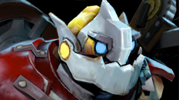
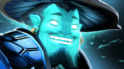

Прогноз ИИ после драфтов
Прогноз в начале карты, когда выбраны все герои. Team Spirit: Sand King, Witch Doctor, Rubick, Slardar, Gyrocopter. Astra Invicta: Io, Enigma, Clockwerk, Lifestealer, Storm Spirit. Оценка драфтов: темп карты +0.1 мин, ожидаемая длительность ≈ 44.6 мин, убийств ≈ 60.2. Форма: Team Spirit — хорошая (+0.15), Astra Invicta — плохая (-0.14). Ставка на одно из трёх событий (победитель, тотал убийств, время) — с наибольшим перевесом: Победа на карте: Team Spirit (коэф 1.5, команды 69% (по картам), с учётом героев и формы 72%, линия 62%, перевес: небольшой). Минимальный коэффициент ставки: победа 1.4, тоталы 1.7. Героев с данными в базе: 10 из 10. Выборки малые, маржа букмекера около 8%: это разбор статистики, а не гарантия.
Прогноз в начале карты, когда выбраны все герои. Team Spirit: Dragon Knight, Earth Spirit, Centaur Warrunner, Hoodwink, Techies. Astra Invicta: Dark Willow, Winter Wyvern, Ember Spirit, Doom, Sven. Оценка драфтов: темп карты -0.3 мин, ожидаемая длительность ≈ 44 мин, убийств ≈ 60.1. Форма: Team Spirit — хорошая (+0.15), Astra Invicta — плохая (-0.14). Ставка на одно из трёх событий (победитель, тотал убийств, время) — с наибольшим перевесом: Время карты больше 39 мин (коэф 1.8, драфты: ожидание 44 мин, линия 39, перевес: небольшой). Минимальный коэффициент ставки: победа 1.4, тоталы 1.7. Героев с данными в базе: 10 из 10. Выборки малые, маржа букмекера около 8%: это разбор статистики, а не гарантия.
Результат
Герои по картам
 -1.9
-1.9
+1.1 ▲-2.6
▲-2.6 -2.9
-2.9
-0.9
 -0.3
-0.3 ▲+0.3
▲+0.3 ▼-1.9
▼-1.9 -0.2
-0.2 ▼+1.1
▼+1.1 -0.3
-0.3 +1.5
+1.5 ▼+1.1
▼+1.1 -0
-0 -3.6
-3.6 ▲-0.4
▲-0.4 +0.5
+0.5 ▼-0.2
▼-0.2 -0.9
-0.9 ▼+0.5
▼+0.5Предварительный прогноз ИИ
Статистика по времени карты
Оценка по статистике команд (винрейт карт, log5, длительность и убийства); состав и драфт не учтены. Не гарантия исхода: выборки малы. Для Team Spirit, Astra Invicta на турнире мало карт — взяты карты со всех турниров.
Коэффициенты до матча
| Рынок | Открытие | Закрытие |
|---|---|---|
| Победа в серии | Team Spirit 1.22 · Astra Invicta 4.3 2026-10-23 21:47 МСК | Team Spirit 1.15 · Astra Invicta 5.55 2026-10-25 18:23 МСК |
| Карта 1 | Победа на карте: Team Spirit: 1.32 / 3.4 2026-10-23 21:47 МСК | Победа на карте: Team Spirit: 1.28 / 3.7 Тотал убийств больше 55.5: 1.72 / 2.0 Тотал убийств больше 56.5: 1.8 / 1.9 Тотал убийств больше 57.5: 1.85 / 1.85 Тотал убийств больше 58.5: 1.93 / 1.77 Тотал убийств больше 59.5: 2.0 / 1.72 Время карты больше 40 мин: 1.65 / 2.1 Время карты больше 41 мин: 1.75 / 1.95 Время карты больше 42 мин: 1.85 / 1.85 Время карты больше 43 мин: 1.95 / 1.75 Время карты больше 44 мин: 2.1 / 1.65 2026-10-25 18:23 МСК |
| Карта 2 | Победа на карте: Team Spirit: 1.25 / 3.85 Тотал убийств больше 54.5: 1.73 / 2.0 Тотал убийств больше 55.5: 1.82 / 1.88 Тотал убийств больше 56.5: 1.9 / 1.8 Тотал убийств больше 57.5: 2.0 / 1.73 Время карты больше 39 мин: 1.62 / 2.1 Время карты больше 40 мин: 1.75 / 1.95 Время карты больше 41 мин: 1.87 / 1.83 2026-10-25 19:10 МСК | Победа на карте: Team Spirit: 1.4 / 2.8 Тотал убийств больше 56.5: 1.75 / 1.95 Тотал убийств больше 57.5: 1.82 / 1.88 Тотал убийств больше 58.5: 1.9 / 1.8 Время карты больше 38 мин: 1.67 / 2.03 Время карты больше 39 мин: 1.8 / 1.9 2026-10-25 19:34 МСК |
Форма команд
| Дата | Соперник | Итог | Ожидание победы | Источник | Очки |
|---|---|---|---|---|---|
| 25.10 | Astra Invicta | W | 74% | линия карты | +0.26 |
| 24.10 | BETBOOM TEAM | W | 62% | линия карты | +0.38 |
| 24.10 | BETBOOM TEAM | W | 76% | линия карты | +0.24 |
| 22.10 | LEGION | W | 66% | модель | +0.34 |
| 22.10 | LEGION | W | 54% | модель | +0.46 |
| 11.10 | Team Yandex | L | 38% | модель | -0.38 |
| 11.10 | Team Yandex | L | 42% | модель | -0.42 |
| 11.10 | Team Yandex | L | 47% | модель | -0.47 |
| Дата | Соперник | Итог | Ожидание победы | Источник | Очки |
|---|---|---|---|---|---|
| 25.10 | Team Spirit | L | 26% | линия карты | -0.26 |
| 24.10 | LEGION | L | 70% | линия карты | -0.70 |
| 24.10 | LEGION | W | 71% | линия карты | +0.29 |
| 24.10 | LEGION | L | 72% | линия серии | -0.72 |
| 23.10 | BETBOOM TEAM | W | 55% | модель | +0.45 |
| 23.10 | BETBOOM TEAM | W | 41% | модель | +0.59 |
| 22.10 | PARIVISION | L | 24% | модель | -0.24 |
| 22.10 | PARIVISION | L | 33% | модель | -0.33 |
Коэффициенты
| Рынок | Коэффициенты | Линия | Статистика | Разница | Основание | Перевес |
|---|---|---|---|---|---|---|
| Победа на карте: Team Spirit | 11.422.8 | 67% | 75% | +8 п.п. | винрейт 64% / 38% | нет перевеса |
| Тотал убийств больше 56.5 | Б1.75М1.95 | 53% | 58% | +5 п.п. | 19 из 33 карт | нет перевеса |
| Тотал убийств больше 57.5 | Б1.82М1.88 | 51% | 55% | +4 п.п. | 18 из 33 карт | нет перевеса |
| Тотал убийств больше 58.5 | Б1.9М1.8 | 49% | 55% | +6 п.п. | 18 из 33 карт | нет перевеса |
| Время карты больше 38 мин | Да1.67нет2.03 | 55% | 70% | +15 п.п. | 23 из 33 карт | небольшой |
| Время карты больше 39 мин | Да1.8нет1.9 | 51% | 67% | +15 п.п. | 22 из 33 карт | небольшой |
| Будут мегакрипы | Да2.1нет1.65 | 44% | 42% | -2 п.п. | 14 из 33 карт | нет перевеса |
| Будет Ultrakill | Да4.8нет1.15 | 19% | 15% | -4 п.п. | 5 из 33 карт | нет перевеса |
| Будет Rampage | Да10.5нет1.02 | 9% | 6% | -3 п.п. | 2 из 33 карт | нет перевеса |
| Будет Beyond Godlike | Да1.92нет1.78 | 48% | 52% | +3 п.п. | 17 из 33 карт | нет перевеса |